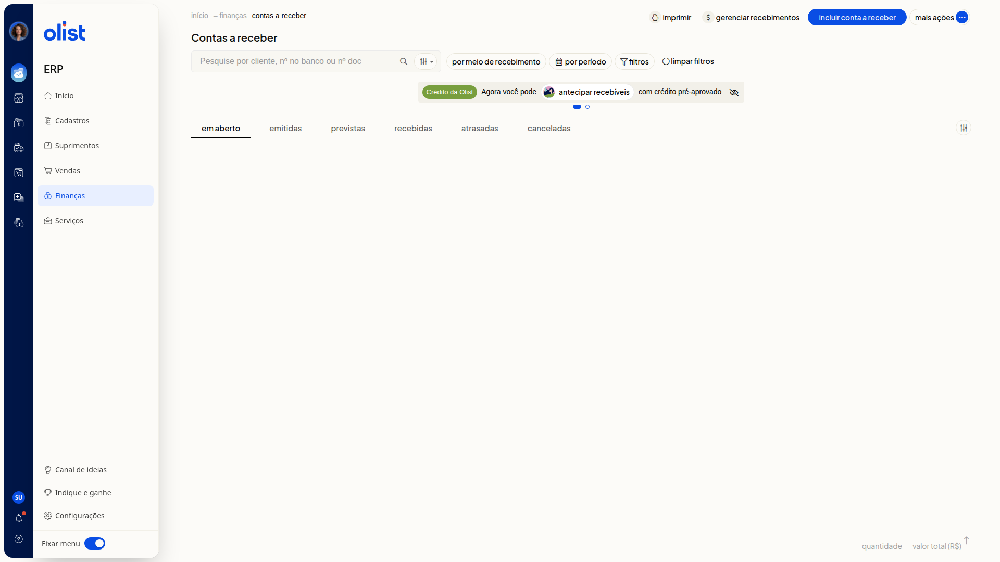
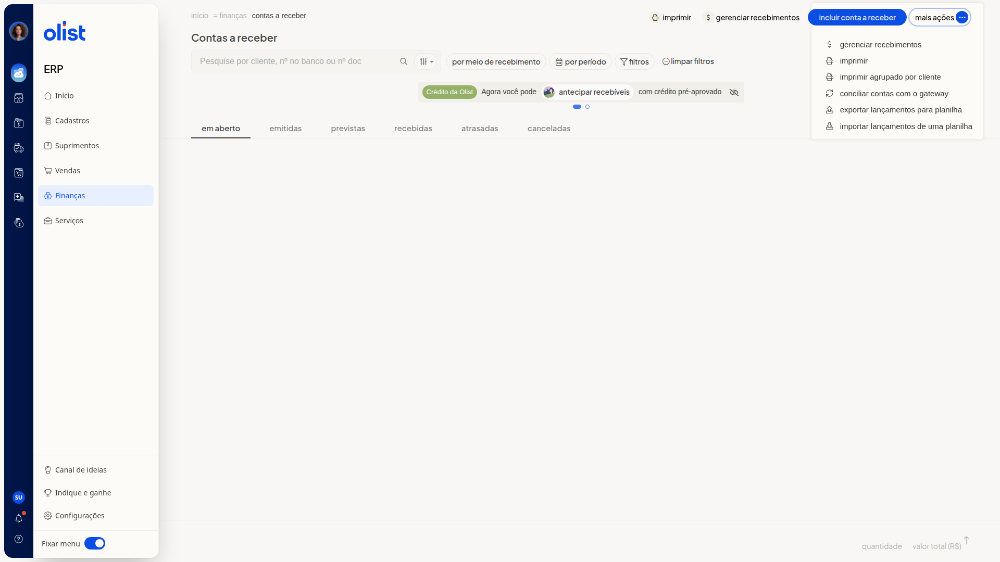

Como conciliar contas a receber com o gateway
Descrição
No ERP da Olist, você concilia as contas a receber com o gateway na tela Contas a receber. A ação Conciliar contas com o gateway fica no menu Mais ações da lista de lançamentos.
Para abrir a tela, acesse Finanças > Contas a Receber.
Pré-requisitos
- Acesso ao menu Finanças no ERP
- Permissão de Contas a receber para acessar a tela
Importante
- Para conciliar, você precisa da permissão para editar em Contas a receber e da permissão para incluir no Caixa.
Instruções
-
Acesse Finanças > Contas a Receber.

-
Clique em Mais ações.

-
Clique em Conciliar contas com o gateway.
Links relacionados
Se precisar de ajuda, fale com o suporte.